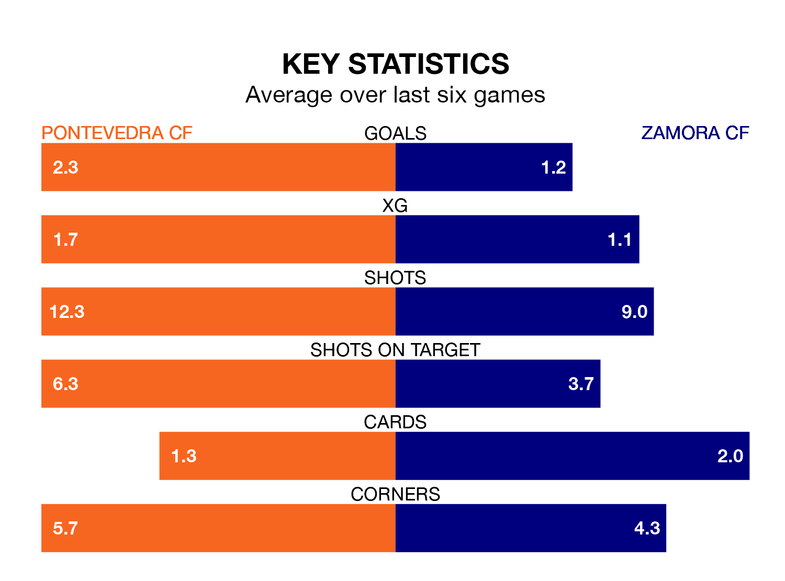

Two of the Segunda División RFEF Group 1's top sides face each other at Estadio Municipal de Pasarón in Sunday's kick-off, when table-topping Pontevedra CF host third-placed Zamora CF.
Pontevedra have picked up 14 wins and seven draws from 23 games so far this season, and sit three points above the visitors going into the 4pm match.
Zamora, meanwhile, have won 13 and drawn seven, picking up 46 points.
With 51 goals in 23 games so far this season, Pontevedra are the league's highest scorers with 2.2 goals per game. And they are conceding fewer than average, letting in 16 goals at a rate of 0.7 per game.
Zamora, meanwhile, are average scorers, with 1.1 goals per game. They have conceded 0.5 goals per game.
The home team are in fantastic form in the Segunda División RFEF Group 1, with five wins and a draw from their last six games.
With four wins and two draws over that period, the visitors' form is slightly worse – they have taken 14 points from 18, compared to Pontevedra's 16.
Pontevedra's last match was on February 18, a 3-1 win against Coruxo, with Borja Domínguez Domínguez getting the goals for Pontevedra.
Zamora drew 0-0 with Ourense CF last time out, also on Sunday.
Updated: 10:08 (UTC), 23/02/24